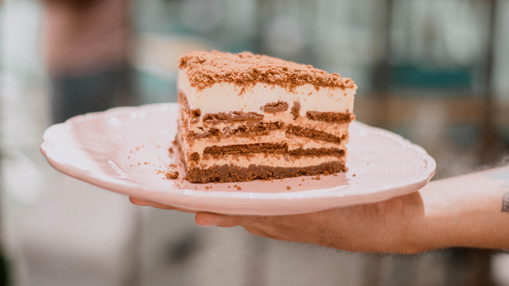

La Gulá
¿Quiénes somos?
La Gulá es una pastelería y cafetería que ofrece vivir experiencias para recordar a través de momentos cotidianos como un desayuno, una merienda o un brunch; donde cada producto elaborado está pensado para impresionar al visitante. En la Capke elaboramos absolutamente todo lo que ofrecemos. Horneamos nuestro pan, pensamos y elaboramos nuestra pastelería intentando innovar y tentarte a través de vistosas y deliciosas tortas. Cocinamos con generosidad y amor porque es la única manera de crear algo trascendente que puedas llevarte, recordar y desearlo nuevamente. Ofrecemos un excelente blend de café pensado para acompañar nuestra pastelería o protagonizar la pausa del día. Hacemos jugos naturales donde buscamos combinar sabores nuevos que refresquen y deleiten a todos. Tardes con amigos, festejos soñados, pausa de trabajo, momentos dulces, terapia de amigas, momentos para disfrutar... disfrutalos en La Gulá
¿Dónde estamos?
Nuestros horarios
Lunes a lunes de 9 a 21hs